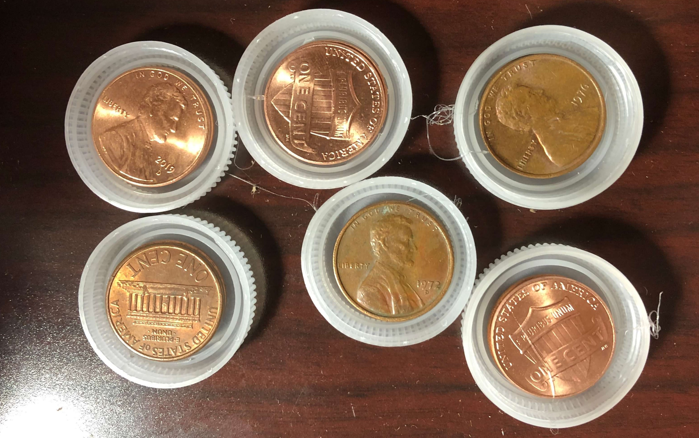

Class 4: Rapid Prototyping
July 2, 2020
Assignment: Make and document either (a) a kinetic sculpture or (b) a quick prototype of a possible final project. This should integrate an electronic circuit with physical components. In addition to components in the kit, feel free to use materials you find around the house (cardboard, toothpicks, coat hangers, tape and glue, etc.).
So far, this week's assignment took me the longest out of all the ones we've done so far due to failed prototypes and other setbacks which will be explained later in this page. I chose to create a kinetic sculpture. I found some inspiration with this video where a guy built a dragon kinetic sculpture using Legos. I decided to try to create the dragon, Haku, from one of my favorite movies, Spirited Away. Here's the finished product!

The process took a lot of trial and error. I decided to build a camshaft and followers to convert rotary motion from a motor into linear up and down motion. Initially, I thought that I could use water bottlecaps as both the cam and follower. Living in the desert, this project definitely kept me hydrated since I needed to drink 12 bottles of water to have enough bottlecaps (although my family helped too). Originally, I had wanted to create 6 followers. To do this, I drilled holes through 6 bottlecaps and then put a wooden dowel through them, offsetting each bottlecap by 60 degrees.
To create the followers, I realized that I needed something to weigh down the follower so that it could move along the cam. I decided to hot-glue 2 pennies to each bottlecap to weigh down each follower.

Then, I hot-glued thin wooden dowels to each follower which would create the moving parts for my dragon.
I used a tissue box as a base and drilled a hole on each end so that it would hold my camshaft. Then, I drilled 6 holes spaced 3 cm apart on the top of the box where the wooden dowels would move up and down. However, the next day I came back to my work (it had been left in the laundry room) and found that the tissue box was gone! Apparently my dad had thought that it was recycling and had thrown it in the recycling bin.
Contaminated by the other objects in our recycling bin, I decided to make a new tissue box base. I drilled holes in another tissue box and put in my camshaft and followers. However, when I tried to manually spin the dowel to spin the camshaft, I found that my cams were too small for my followers. Thus, I decided to use cardboard to make new cams. Specifically, I used the cardboard from the box that our kits were sent to us in since it seemed pretty thick and sturdy.
To do this, I used the hole of a giant kazoo to trace identical circles since I felt that this would be a good size for the cam (don't ask why I have a giant kazoo). I cut out 12 circles from the cardboard with scissors (which is really tiring by the way), then I hot-glued two circles together and wrapped paper around the rim of the cam to give a smooth surface. Finally, I drilled an offcenter hole in each cam that I would use to attach it to a wooden dowel. I came out with 6 cams. It was really difficult cuting the cardboard by hand, and if we had access to the FabLab, then I definitely would have used the laser cutter to do it instead.
I decided that the followers were still fine to use and put my new camshaft in my tissue box. However, I found out that my followers were too tightly spaced and thus wouldn't be able to move up and down on the cams like I wanted them to. To remedy this, I decided to only use 3 cams/followers.
I was so happy when my camshaft finally succeeded, although the followers would move off of the cams after a few rotations. In order to steady the wooden dowels on top of the followers, I used cardboard to build a stabilizing structure and used hot glue to connect it to the top of the tissue box.
However, even though my dowels were successfully moving up and down, I found that the camshaft would frequently shift left and right and lose contact with the followers. To fix this, I hot-glued two of the extra cams that I had created to the sides of the tissue box and put the dowel through them, hoping that this would keep it from shifting left and right.
I followed the class tutorial on how to use the L9110 H Bridge Power Driver to drive a motor, using my Metro board as a power source. However, I wanted to make the motor speed variable, so during the next lab day, I learned how to control a motor with a potentiometer. By plugging the potentiometer into pins A0, A2, and A4 of the Metro board, I used the following code in Arduino (which I got from our class site here) to make the motor speed vary as the dial on the potentiometer was turned.
void setup() {
pinMode(3, OUTPUT);
pinMode(A0, OUTPUT); //This will be GND for the potentiometer
pinMode(A4, OUTPUT); //This will be 3.3V for the pot.
digitalWrite(A0, LOW);
digitalWrite(A4, HIGH);
}
void loop() {
int pot_value = analogRead(A2); //pot wiper is on A2
int motor_level = map(pot_value, 0, 1023, 255, 0); // map motor_level to pot_value so that zero corresponds to lowest speed.
analogWrite(3, motor_level);
delay(1);
}
Lab day also helped me figure out how to attach a motor to the wooden dowel acting as the camshaft. I cut a piece of a plastic straw and put it around the dowel and motor shaft, using hot glue to stick them together. I couldn't find any zipties to secure the motor shaft further, so I instead used a twist tie.
But even though my motor shaft was now attached to the dowel, when I turned the motor on, I panicked as my Metro board, motor driver, and motor itself all began to spin, tangling all of the wires. I found that I would need to somehow secure the motor driver to something. I ended up using screws to secure it to the side of the tissue box.
Finally, it was time to create the actal dragon! I found an image of Haku online and traced the front of the dragon and free-handed the rest of the dragon up until the tail. After coloring it in, I cut the dragon into five pieces that I would stick onto the dowels. I taped each piece to a dowel and then used string to connect each piece. I taped the dowels with the head and tail of the dragon to both sides of the tissue box while the remaining three middle parts were put on the dowels of the followers. When I found that the head piece was a bit too long, I taped another dowel at an angle to support it further. And voila! Haku is done!
Although this was the most time-consuming assignment by far, I think it was also my favorite. I would love to try to create another kinetic sculpture again now that I have some experience and can learn from my mistakes. If I had extra time, I would probably also attempt to decorate the sides of the tissue box to make the sculpture more aesthetically-pleasing. However, I'm still happy with how it turned out in the end.